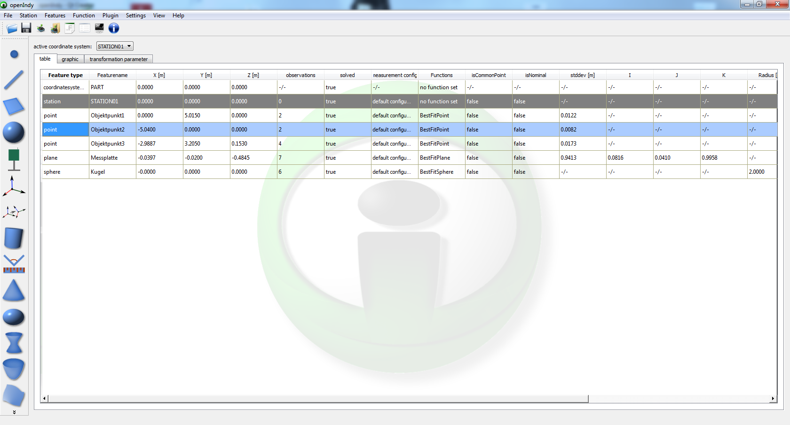
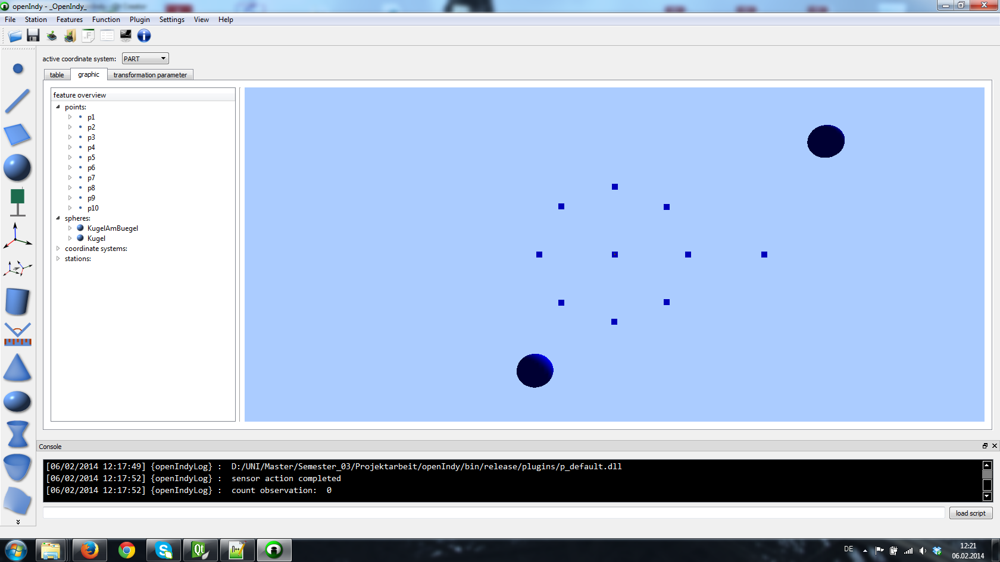
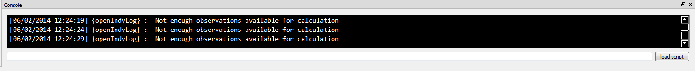

OpenIndy
user guide
https://github.com/openindy

views
The graphical user interface of OpenIndy is made according to the principle of "one model many views". So OpenIndy has some internal data logik, where it stores all dependencies, features and other things. The user has different possibilities to view this data and work with it. The following sections will display these views and describe them.
table view
the table view displays all created features during this job. It contains acutal and nominal features (geometries, stations, coordinate systems.
Only transformation parameters are seperated in their own tableview. On line in the table view represents one feature with all its attributes.

example tableview with some features

one example line extracted from table view
In this extract of a feature you can see the main information of this feature like its feature typ (point), its name, its coordinates, set functions, the measurement config etc.
graphic view
Another possibility to get a view on your data is the graphic view, that shows all the features in a 3D OpenGL rendered graphic view. This view allows the user to get an overview about the positional relationship between the features. A bonus feature in this view is the tree view that displays all features with its attributes in addition to the graphic view.

The graphic view of our measurement
task from this user guide
console
The console in OpenIndy is used for status messages, information, warnings and errors about the current interactions, actions and functions.

example of a console